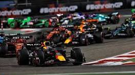

Before F1, I thought racing was just fast cars going in circles, but now I see it as a brilliant chess match at 200 miles per hour. I learned that a tenth of a second or a perfectly timed pit stop can change everything. Strategy became just as thrilling as speed, and I stopped watching for crashes and started watching for moves. F1 taught me patience—races aren't won on the first lap, but in the final, tense moments. It gave me something to look forward to every other weekend, from Monaco's glamour to Singapore's night lights. I found a community where rivalries are fierce but respect runs deeper, and we all share the same Sunday ritual. F1 didn't just change how I watch sports—it changed how I see focus, teamwork, and the beauty of tiny margins.
